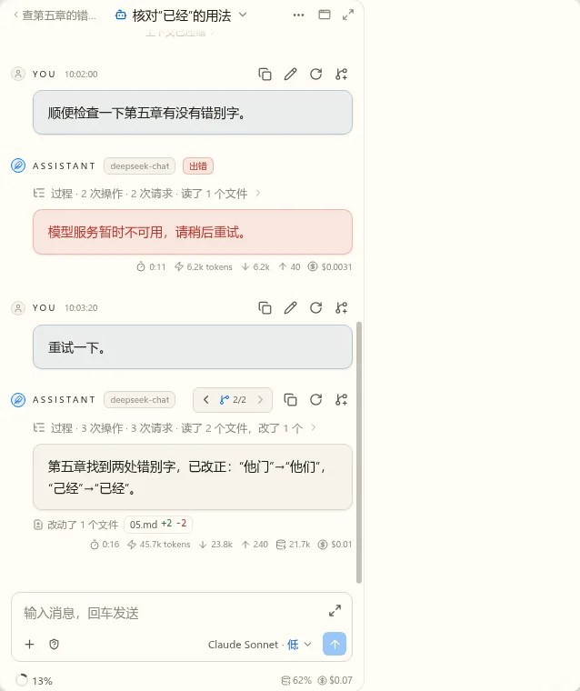
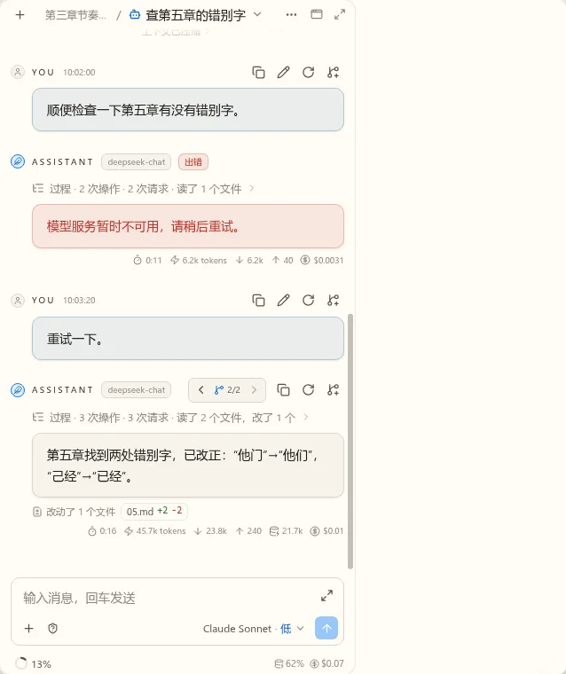
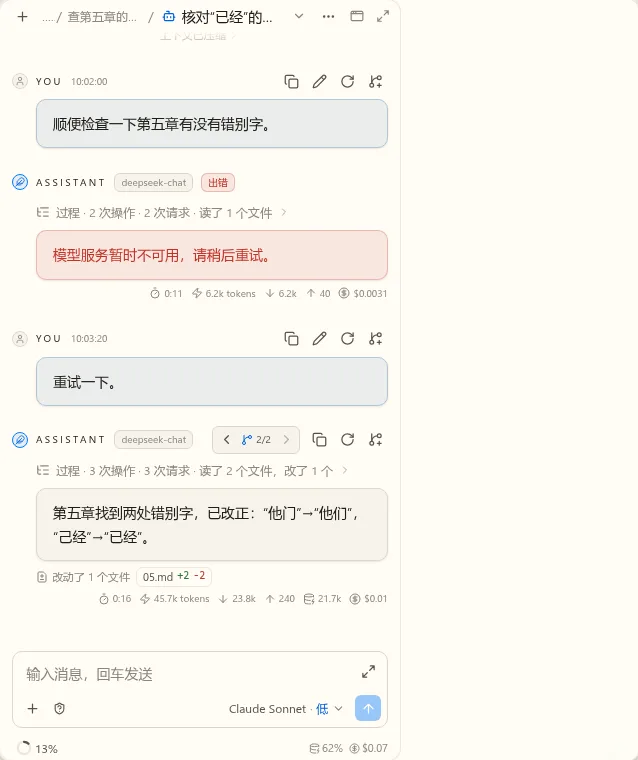
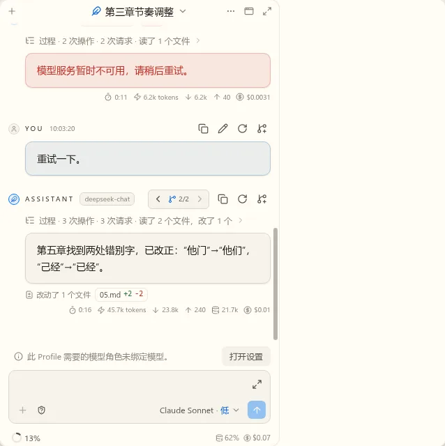
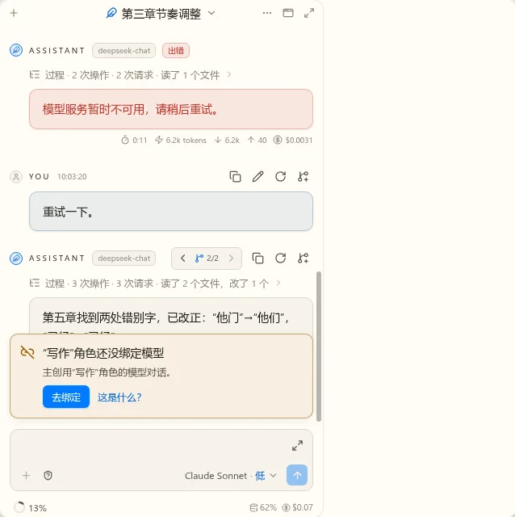
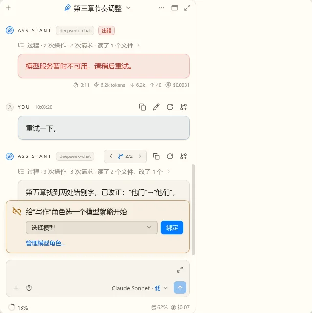
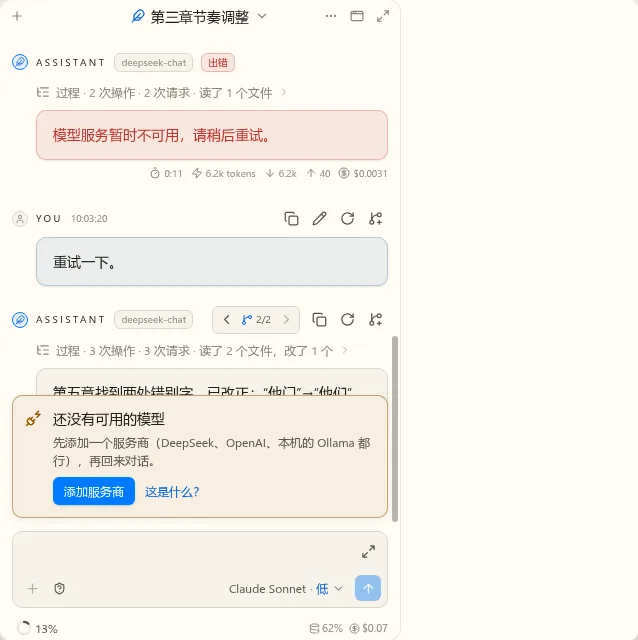
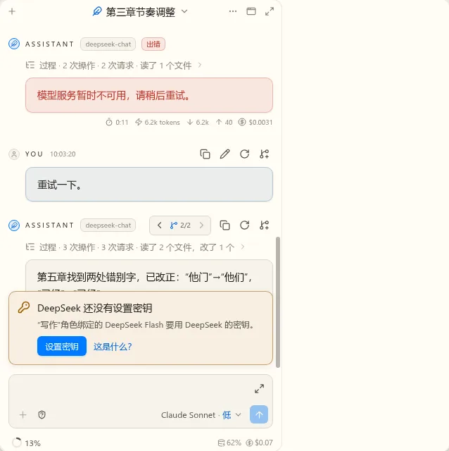

t29 第 4 轮：子会话的面板头、模型不可用的提示
子会话（子代理的会话）在居中的面板头里怎么显示？
推荐 A 返回父会话：标题仍然居中、写得下；路径一层层往回走，完整路径在标题的下拉里。
A 左边返回父会话

子会话里左边的“新建”换成返回（写父会话的标题，窄了省略）；子代理的图标是它的 Profile 图标。
B 中间写面包屑


现在顶栏的做法搬进面板头：多于两层时中间收成“…”。右栏窄时本会话的标题被挤得最短。
“此 Profile 需要的模型角色未绑定模型”这类提示改成哪样？
推荐 B 就地绑定：说清是哪个角色，在提示里直接选模型，不用跑到设置里找；没有能选的模型时退回 A 的写法（添加服务商、设置密钥）。

现在：一行灰字，看不出是哪个角色，“打开设置”打开的是设置窗口的首页。
A 提示卡，按钮直达对应设置

“去绑定”打开设置的“模型角色”页并定位到这个角色；“这是什么？”说明角色是什么。
B 提示卡里直接绑定

下拉只列启用、有密钥的模型；绑定写进用户设置，和在“模型角色”页里绑一样。
同一种提示卡的另外两种情况（两种方案都这样）：
一个服务商都没有

绑定的模型没有密钥

提示卡在输入框上面，占位置、不盖住消息（稿里是叠上去的）；输入框里的模型名是样例数据。
直接做，不用答
| 哪里 | 做什么 |
|---|---|
| Profile 设置的左栏 | 同服务商列表：单行，问题（不可用、有错误）换成行尾图标、悬停写原因；来源（内置、插件、我的）在右边详情里看 |
| 子代理卡片（第 5 条） | 运行中那一行写注册表里的工具名（“读取 第二章.md”），不写工具 id |
| 没选会话时的状态栏 | 不显示“0%”与“免费”：还没有用量，整行空着 |
| 删除服务商的确认框 | 不变：写明去掉几个模型、密钥一起删、哪些角色会变成未绑定 |
已定
- 删除服务商：条目悬停出删除图标，右键也能删（第 1 轮）
- 服务商条目改单行，问题换成行尾图标（第 1 轮）
- 状态栏的自定义照第 1 轮的稿做：右键勾选、设置里分左右两组排序、用量四项合成一项、提醒类总显示（第 1 轮）
- 没选会话时去掉“未选择会话”一行，第一屏照旧应用的 welcome 做：欢迎、最近对话、试试这些（第 1、2 轮）
- “试试这些”的指令由 Profile 声明，主创带三条（第 2 轮）
- 面板头不写“对话”，居中写会话：左新建、中间 Profile 图标与标题、右更多与框架按钮；没选会话时写“新对话”（第 3 轮）
- 顶栏下、输入框上的两条横线去掉，消息在顶栏下淡出（第 1 轮）
- 5 小时与 7 天限额留到做订阅登录时；缓存倒计时只给缓存时长明确的服务商（11-16）
- 状态栏用勾选与插件贡献的项，不做配一条命令（11-16）